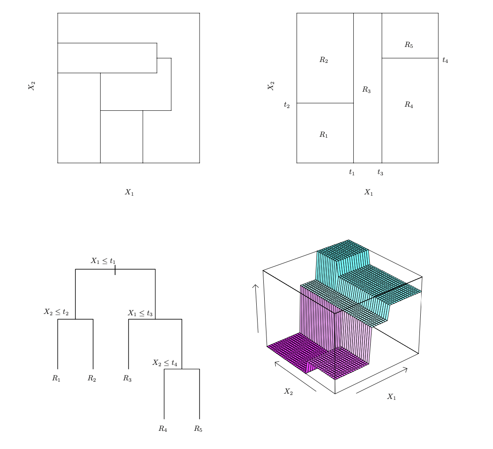

65 Trees
Goal: Estimate the ATT in this Population
$$ \newcommand{X}{} \newcommand{Y}{}
$$
\[ \text{ATT} = \sum_x \textcolor[RGB]{0,191,196}{P_{x \mid 1}} \ \left\{ * \right\}{\textcolor[RGB]{0,191,196}{\mu(1,x)} - \textcolor[RGB]{248,118,109}{\mu(0,x)}} \]
- Let’s think about a medication that’s given to people over 50.
- We’re interested in estimating its effect.
- In particular, the average effect on the treated—the people who take it.
- We’ll think of treatment as randomized with a treatment probability \(\pi(x)\) that depends on age.
- The older you are, the more likely you are to get the treatment.
- That’s why we see more green dots on the right and more red dots on the left.
We’ll Use This Sample

\[ \widehat{\text{ATT}} = \sum_x \textcolor[RGB]{0,191,196}{\hat P_{x \mid 1}} \ \left\{ * \right\}{\textcolor[RGB]{0,191,196}{\hat\mu(1,x)} - \textcolor[RGB]{248,118,109}{\hat\mu(0,x)}} \]
Review
Familiar Options


\[ \widehat{\text{ATT}} = \sum_x \textcolor[RGB]{0,191,196}{P_{x \mid 1}} \ \left\{ * \right\}{\textcolor[RGB]{0,191,196}{\hat\mu(1,x)} - \textcolor[RGB]{248,118,109}{\hat\mu(0,x)}} \qfor \hat\mu = \mathop{\mathrm{argmin}}_{m \in\mathcal{M}} \frac{1}{n}\sum_{i=1}^n \gamma(W_i,X_i) \ \left\{ * \right\}{Y_i - m(W_i,X_i)}^2 \]
The `All Functions’ Model (aka Saturated Model)


\[ \widehat{\text{ATT}} = \sum_x \textcolor[RGB]{0,191,196}{\hat P_{x \mid 1}} \ \left\{ * \right\}{\textcolor[RGB]{0,191,196}{\hat\mu(1,x)} - \textcolor[RGB]{248,118,109}{\hat\mu(0,x)}} \qfor \hat\mu = \mathop{\mathrm{argmin}}_{m \in\mathcal{M}} \frac{1}{n}\sum_{i=1}^n \gamma(W_i,X_i) \ \left\{ * \right\}{Y_i - m(W_i,X_i)}^2 \]
- The model lets us make any prediction at any level \((w,x)\) of the treatment and covariate.
- So we’ll make the best prediction at each level in terms of our error criterion.
- The least squares thing to do is to use the sample means.
- Weighting doesn’t matter with this model. Why not?
\[ \begin{aligned} \hat \mu(w,x) &= \mathop{\mathrm{argmin}}_{m \in \mathbb{R}} \sum_{i:W_i=w, X_i=x} \gamma(W_i,X_i) \ \left\{ * \right\}{Y_i-m}^2 \\ &= \frac{\sum_{i:W_i=w, X_i=x} \gamma(W_i,X_i) \ Y_i}{\sum_{i:W_i=w, X_i=x}^n \gamma(W_i,X_i) } \\ &\textcolor{blue}{=} \frac{\sum_{i:W_i=w, X_i=x} Y_i}{\sum_{i:W_i=w, X_i=x} 1} \end{aligned} \]
- The weights are constant within each average: \(\gamma(W_i,X_i) = \gamma(w,x)\).
- So what we’re minimizing to get \(\hat\mu(w,x)\) is unweighted squared error times a constant.
- That constant factor doesn’t change the solution.
The ‘Horizontal Lines’ Model


\[ \widehat{\text{ATT}} = \sum_x \textcolor[RGB]{0,191,196}{P_{x \mid 1}} \ \left\{ * \right\}{\textcolor[RGB]{0,191,196}{\hat\mu(1,x)} - \textcolor[RGB]{248,118,109}{\hat\mu(0,x)}} \qfor \hat\mu = \mathop{\mathrm{argmin}}_{m \in\mathcal{M}} \frac{1}{n}\sum_{i=1}^n \gamma(W_i,X_i) \ \left\{ * \right\}{Y_i - m(W_i,X_i)}^2 \]
- Weighting really matters for this model. Why?
\[ \begin{aligned} \hat \mu(w,x) &= \sum_{i:W_i=w} \gamma(W_i,X_i) \ \left\{ * \right\}{Y_i-m}^2 \\ &= \frac{\sum_{i:W_i=w} \gamma(W_i,X_i) \ Y_i}{\sum_{i:W_i=w} \gamma(W_i,X_i)} \end{aligned} \]
- We’re fitting a constant to the red folks and a constant to the green folks.
- If we don’t weight, we get the raw difference in means. What’s wrong with that?
- Most of the red folks are on the left, so \(\textcolor[RGB]{248,118,109}{\hat\mu(0,x)}\) will fit them.
- Most of the green folks are on the right, so \(\textcolor[RGB]{0,191,196}{\hat\mu(1,x)}\) will fit them.
- So we’re comparing the green folks on the right to the red folks on the left.
- Our estimate tells us as much about covariate shift as it does about treatment effect.
- Inverse probability weighting fixes this by choosing \(\textcolor[RGB]{248,118,109}{\hat\mu(0,x)}\) to fit the red folks on the right.
The Additive Model


\[ \widehat{\text{ATT}} = \sum_x \textcolor[RGB]{0,191,196}{P_{x \mid 1}} \ \left\{ * \right\}{\textcolor[RGB]{0,191,196}{\hat\mu(1,x)} - \textcolor[RGB]{248,118,109}{\hat\mu(0,x)}} \qfor \hat\mu = \mathop{\mathrm{argmin}}_{m \in\mathcal{M}} \frac{1}{n}\sum_{i=1}^n \gamma(W_i,X_i) \ \left\{ * \right\}{Y_i - m(W_i,X_i)}^2 \]
- This is a little harder to understand than either the horizontal or saturated case.
- In intuitive terms, you can think of what’s happening as follows.
- We choose the shape of the two curves to follow the trend we see when we ignore color.
- On the right, we’re following the trend of the green folks. That’s who is on the right.
- On the left, we’re following the trend of the red folks. That’s who is on the left.
- We choose the heights, shifting that shape up or down, to get the within-group means right. \[ 0 = \sum_{i=1}^n \gamma(W_i,X_i) \ \left\{ * \right\}{Y_i - m(W_i,X_i)}^2 \ m(W_i,X_i) \qfor \textcolor[RGB]{248,118,109}{m=1_{=0}} \qand \textcolor[RGB]{0,191,196}{m=1_{=1}}. \]
- We choose the shape of the two curves to follow the trend we see when we ignore color.
- This means that—unless the trend is the same for both groups—we’re not really fitting the red folks on the right.
- Unless we weight, which emphasizes the red folks on the right when we choose both shape and height.
The Parallel Lines Model


\[ \widehat{\text{ATT}} = \sum_x \textcolor[RGB]{0,191,196}{P_{x \mid 1}} \ \left\{ * \right\}{\textcolor[RGB]{0,191,196}{\hat\mu(1,x)} - \textcolor[RGB]{248,118,109}{\hat\mu(0,x)}} \qfor \hat\mu = \mathop{\mathrm{argmin}}_{m \in\mathcal{M}} \frac{1}{n}\sum_{i=1}^n \gamma(W_i,X_i) \ \left\{ * \right\}{Y_i - m(W_i,X_i)}^2 \]
- What happens with the parallel lines model is similar, except we choose one slope instead of one shape.
The ‘Lines Model’


\[ \widehat{\text{ATT}} = \sum_x \textcolor[RGB]{0,191,196}{P_{x \mid 1}} \ \left\{ * \right\}{\textcolor[RGB]{0,191,196}{\hat\mu(1,x)} - \textcolor[RGB]{248,118,109}{\hat\mu(0,x)}} \qfor \hat\mu = \mathop{\mathrm{argmin}}_{m \in\mathcal{M}} \frac{1}{n}\sum_{i=1}^n \gamma(W_i,X_i) \ \left\{ * \right\}{Y_i - m(W_i,X_i)}^2 \]
- This is a little harder to understand than the horizontal lines case.
- We do a bit better because because having a slope lets us fit the data better.
- We don’t have to make the same prediction on the left and the right.
- But we’ve still essentially got the same problem.
- We’re choosing the slope of \(\textcolor[RGB]{248,118,109}{\hat\mu(0,x)}\) to fit most of the red folks.
- Who aren’t we quite fitting? Why does this matter? How does weighting help?
- We’re not fitting the red folks furthest to the right.
- Weighting fixes this by emphasizing fit on the right when we choose \(\textcolor[RGB]{248,118,109}{\hat\mu(0,x)}\).
Summary


\[ \widehat{\text{ATT}} = \sum_x \textcolor[RGB]{0,191,196}{P_{x \mid 1}} \ \left\{ * \right\}{\textcolor[RGB]{0,191,196}{\hat\mu(1,x)} - \textcolor[RGB]{248,118,109}{\hat\mu(0,x)}} \qfor \hat\mu = \mathop{\mathrm{argmin}}_{m \in\mathcal{M}} \frac{1}{n}\sum_{i=1}^n \gamma(W_i,X_i) \ \left\{ * \right\}{Y_i - m(W_i,X_i)}^2 \]
- Unless we’re using the ‘all-functions model’, weighting is important.
- It’s important because the ATT depends on the value of \(\textcolor[RGB]{248,118,109}{\hat\mu(0,x)}\) on the right.
- And in other models, that’s determined by a bunch of observations that aren’t on the right
- Weighting fixes the problem by choosing \(\textcolor[RGB]{248,118,109}{\hat\mu(0,x)}\) to do what we need it to—fit on the right.
- And that’s great. It’s easy to do once you work out what the weights should be.
- And you can get valid intervals even with widly misspecified models.
- But if we want a different solution, we can solve the problem like the ‘all-functions model’ does.
- It fits the data locally. What happens on the right doesn’t affect what happens on the left.
- We can do that even if we’re not using the all-functions model. We can use a piecewise-constant model.
Piecewise-Constant Models
Piecewise-Constant Models: 2 Bins


\[ \widehat{\text{ATT}} = \sum_x \textcolor[RGB]{0,191,196}{P_{x \mid 1}} \ \left\{ * \right\}{\textcolor[RGB]{0,191,196}{\hat\mu(1,x)} - \textcolor[RGB]{248,118,109}{\hat\mu(0,x)}} \qfor \hat\mu = \mathop{\mathrm{argmin}}_{m \in\mathcal{M}} \frac{1}{n}\sum_{i=1}^n \textcolor{purple}{\gamma(W_i,X_i)} \ \left\{ * \right\}{Y_i - m(W_i,X_i)}^2 \]
- Here we’re fitting constants to the left, middle, and right of the data in each group.
\[ \hat\mu(w,x) = \begin{cases} \hat a_0(w) & \text{if } x \leq 60 \\ \hat a_1(w) & \text{if } 60 < x \le 70 \\ \hat a_2(w) & \text{if } 70 < x \end{cases} \]
We’re still not doing the best job of fitting the red folks on the right.
- That’s because there a slope in the data that we’re not capturing.
- But we’re still doing pretty well when it comes to estimating the ATT.
We’re doing so well that weighting doesn’t improve things much. Why?
Hint. Look at the purple line, which shows the weights for untreated folks.
The least squares estimator at each point is the average of the samples within the same segment.
The weighted least squares takes a weighted average within each segment.
- But the weights don’t vary much within segments.
- So the weighted average is similar to the unweighted one.
Piecewise-Constant Models: 4 Bins


\[ \widehat{\text{ATT}} = \sum_x \textcolor[RGB]{0,191,196}{P_{x \mid 1}} \ \left\{ * \right\}{\textcolor[RGB]{0,191,196}{\hat\mu(1,x)} - \textcolor[RGB]{248,118,109}{\hat\mu(0,x)}} \qfor \hat\mu = \mathop{\mathrm{argmin}}_{m \in\mathcal{M}} \frac{1}{n}\sum_{i=1}^n \textcolor{purple}{\gamma(W_i,X_i)} \ \left\{ * \right\}{Y_i - m(W_i,X_i)}^2 \]
- When we use more segments, we’re doing a better job of fitting the data.
- And our weights are closer to constant within segments. It barely makes a difference.
How Do I Choose The Number of Segments?


Weight or Go Big. Or Both.


- Big piecewise-constant models look promising in our example.
- Bias goes down as we increase segment count.
- And variance doesn’t really go up.
- Conceptually, these let us avoid bias in two ways—even if we’re doing unweighted least squares.
- If the inverse probability weights are effectively constant within segments,
we’re effectively inverse probability weighting. - If the subpopulation mean \(\mu\) is effectively constant within segments,
we’re effectively not misspecfied.
- If the inverse probability weights are effectively constant within segments,
- What’s the downside to going big?
- People worry about variance. And we’re not really seeing it here.
- Why not? Let’s look into it.
Going Big
Piecewise-constant models fit via unweighted least squares.
This is pretty subtle. It’s not something to worry about for an exam.
The Point

- People say that you get more variance when you use bigger models.
- For piecewise-constant models, there’s a really natural intuitive argument for that.
- Within each segment, we’re fitting a constant. Taking a mean.
- And the mean of \(n\) things has variance proportional to \(1/n\).
- But when you then average predictions from different segments, a lot of that variance goes away.
- The more segments you have, the more things you’re averaging.
- And the more things you’re averaging, the more the variance goes down.
- The variance reduction you get is effectively determined by the amount of bias you risk.
Why Doesn’t Going Big Increase Variance (Much)?


\[ \widehat{\text{ATT}} = \sum_x \textcolor[RGB]{0,191,196}{P_{x \mid 1}} \left\{ * \right\}{\textcolor[RGB]{0,191,196}{\hat\mu(1,x)} - \textcolor[RGB]{248,118,109}{\hat\mu(0,x)}} \]
- When we have lots of bins, our predictions are all over the place. It ‘feels noisy’.
- What’s happening is that this noise is averaging out. Let’s start somewhere simple.
- Suppose we pair up all our observations, average the pairs, and average the averages.
- We get the same thing as if we just averaged all the observations without pairing.
- That’s essentially what’s going on with the easy part of the ATT formula.
- If we have \(1\) bin for each level of \(X\), we get the same thing as if we have 1 bin outright. \[ \sum_x \textcolor[RGB]{0,191,196}{P_{x \mid 1}} \times \textcolor[RGB]{0,191,196}{\hat\mu(1,x)} = \sum_{x} \frac{\sum_{i:W_i=1,X_i=x} 1}{\sum_{i:W_i=1} 1} \times \frac{\sum_{i:W_i=1, X_i=x} Y_i}{\sum_{i:W_i=1, X_i=x} 1} = \frac{\sum_{i:W_i=1} Y_i}{\sum_{i:W_i=1} 1} \]
- Now let’s think about the hard part—the mixed-color one.
- After coarsening to bins, we’re just using within-bin subsample means as our estimates \(\textcolor[RGB]{248,118,109}{\hat\mu(0,x)}\).
- So what we really have is a linear combinations of subsample means.
\[ \begin{aligned} \sum_x \textcolor[RGB]{0,191,196}{P_{x \mid 1}} \times \textcolor[RGB]{248,118,109}{\hat\mu(0,x)} &= \sum_{k} \sum_{x \in \text{bin}_k} \textcolor[RGB]{0,191,196}{P_{x \mid 1}} \times \textcolor[RGB]{248,118,109}{\hat\mu(0,\text{bin}_k)} \\ &= \sum_{k} \textcolor[RGB]{248,118,109}{\hat\mu(0,\text{bin}_k)} \ \sum_{x \in \text{bin}_k} \ingreen{P_{x \mid 1} \\ &= \sum_{k} \hat\alpha_k \ \textcolor[RGB]{248,118,109}{\hat\mu(0,\text{bin}_k)} \qfor \hat\alpha_k = \sum_{x \in \text{bin}_k} \textcolor[RGB]{0,191,196}{P_{x \mid 1}} \end{aligned} \]
\[ \sum_x \textcolor[RGB]{0,191,196}{P_{x \mid 1}} \ \textcolor[RGB]{248,118,109}{\hat\mu(0,x)} = \sum_{k} \hat\alpha_k \ \textcolor[RGB]{248,118,109}{\hat\mu(0,\text{bin}_k)} \qfor \hat\alpha_k = \sum_{x \in \text{bin}_k} \textcolor[RGB]{0,191,196}{P_{x \mid 1}} \]
- We can use the variance formula we worked out earlier in the semester.
- With a few approximations and some clever arithmetic, we can get something meaningful.
- Variance is proportional to the average–over green folks–of the ratio of our within-bin averaged histograms.
- See Section 70.1 for the details.
\[ \begin{aligned} \mathop{\mathrm{\mathop{\mathrm{V}}}}\left\{ * \right\}{\sum_{k} \hat\alpha_k \ \textcolor[RGB]{248,118,109}{\hat\mu(0,{\text{bin}_k})}} \approx \sum_{k} \hat\alpha_k^2 \ \mathop{\mathrm{\mathop{\mathrm{V}}}}\left\{ * \right\}{\textcolor[RGB]{248,118,109}{\hat\mu(0, \text{bin}_k)}} \textcolor{blue}{\approx} \frac{\sigma^2}{n \ P(W=0)}\sum_x \textcolor[RGB]{0,191,196}{P_{x \mid 1}} \frac{ \textcolor[RGB]{0,191,196}{\sum_{x' \in \text{bin}(x)} P_{x'\mid 1}} }{ \textcolor[RGB]{248,118,109}{\sum_{x' \in \text{bin}(x)} P_{x' \mid 0}}} \end{aligned} \]
A Picture

\[ \mathop{\mathrm{\mathop{\mathrm{V}}}}\left\{ * \right\}{\sum_x \textcolor[RGB]{0,191,196}{P_{x \mid 1} \ \textcolor[RGB]{248,118,109}{\hat\mu(0,x)}}} \approx \frac{\sigma^2}{n \ P(W=0)} \textcolor[RGB]{239,71,111}{\sum_x} \textcolor[RGB]{0,191,196}{P_{x \mid 1}} \textcolor{purple}{\left\{ * \right\}{\frac{ \textcolor[RGB]{0,191,196}{\sum_{x' \in \text{bin}(x)} P_{x'\mid 1}} }{ \textcolor[RGB]{248,118,109}{\sum_{x' \in \text{bin}(x)} P_{x' \mid 0}}}}} \]
- The purple lines show the ratio of bin-averaged densities from the variance formula: \(\textcolor{purple}{\{ \textcolor[RGB]{0,191,196}{\ldots} / \textcolor[RGB]{248,118,109}{\ldots}\}}\).
- For a 3-piece model, we get the solid one. The sum in the variance is 1.49.
- For a 6-piece model, we get the dashed one. The sum in the variance is 1.53.
- For a 30-piece (saturated) model, we get the dotted one. The sum in the variance is 1.55.
- The variance improvement we get by using a smaller model is pretty small.
An Extreme-Case Picture

\[ \mathop{\mathrm{\mathop{\mathrm{V}}}}\left\{ * \right\}{\sum_x \textcolor[RGB]{0,191,196}{P_{x \mid 1} \times \textcolor[RGB]{248,118,109}{\hat\mu(0,x)}}} \approx \frac{\sigma^2}{n \ P(W=0)}\textcolor[RGB]{239,71,111}{\sum_x} \textcolor[RGB]{0,191,196}{P_{x \mid 1}} \textcolor{purple}{\left\{ * \right\}{\frac{ \textcolor[RGB]{0,191,196}{\sum_{x' \in \text{bin}(x)} P_{x'\mid 1}} }{ \textcolor[RGB]{248,118,109}{\sum_{x' \in \text{bin}(x)} P_{x' \mid 0}}}}} \]
- Here’s what we see when our densities are a lot rougher—there’s more to ‘smooth out’ by averaging.
- For a 3-piece model, we get the solid one. The sum in the variance is 1.03.
- For a 6-piece model, we get the dashed one. The sum in the variance is 1.04.
- For a 30-piece (saturated) model, we get the dotted one. The sum in the variance is 3.52.
- The variance improvement we get by using a smaller model is a lot bigger. But it’s not free.
The Cost


- When our densities our rougher, the inverse probability weights \(\textcolor[RGB]{160,32,240}{\gamma(1,x)}=\textcolor[RGB]{0,191,196}{P_{x\mid 1}}/\textcolor[RGB]{248,118,109}{P_{x\mid 0}}\) aren’t constant within segments.
- That means we don’t ‘automatically’ get the benefits of weighting when we do least squares.
- We’re paying for our variance reduction with a bias increase. Or the potential for one.
Grids and Trees
Piecewise Constant Models in 2D
A 2D Example


- Suppose we’re interested in the health impacts of a chemical leak.
- What we’re looking at on the left is a map of the chemical concentration in the air.
- Lighter colors on the left mean higher concentrations.
- Those are our supopulation means. But we can’t measure concentration everywhere all the time.
- We’ll measure it a set of randomly chosen locations—location density on the right
A 2D Example


- Our sample is this set of measurements \((Z_i,X_i,Y_i)\).
- \(Z_i\) = concentration at measurement location i.
- \(X_i\) = longitude at location i
- \(Y_i\) = latitude at location i
A 2D Example


- We’ll take them at random times, too. In the population we’re sampling from …
- There are many observations \((z_j,x_j,y_j)\) at the same location \((x_j,y_j)\)
- We’ll sample with replacement. The probability a sample is at a given location is shown on the right.
A 2D Example


- There are 2000 observations in our sample.
- We want to estimate \(\mu(x,y)=\mathop{\mathrm{E}}[Z_i \mid X_i=x, Y_i=y]\).
- What we see on the right are the predictions \(\hat\mu(x,y)\) of the saturated model.
- i.e., the mean of the observations at each location.
Fitting A Saturated Model


- Here are the predictions of the saturated model.
- i.e., the means of the observed concentrations at at each location.
- white = zero observations at that location.
- It’s ok near the center but bad elsewhere, where we sample less.
Grid Models


- Here we see a ‘grid model’—a piecewise-constant model with square bins.
- This is less messy than the saturated model.
- But it’s not resolving detail very well.
A Piecewise-Constant Model


- Larger grid models—ones with smaller bins—resolve detail better, but they’re huge.
- On the left, we have \(12 \time 12 = 144\) bins; on the right, \(16 \times 16 = 256\) bins.
- We only have 2000 observations.
Anisotropic Grid Models


- We can try using rectangles, rather than squares, as bins.
- Both of these have \(32 \times 8 = 256\).
- But, fundamentally, there’s no right rectangle-shape either.
- We want smaller bins near the center of the data, where we have more observations and more variation in the outcomes.
Anisotropic Grid Models


- There’s no reason, statistically speaking, that our bins should be …
- all the same shape
- all the same number of locations
- spatially contiguous locations
Any set of pixels can be a bin

- But we need some way to search for good partitions of the pixels into bins.
- Trying all possible partitions is computationally infeasible.
- And it runs into a major statistical issue we haven’t had time to address satisfactorily—overfitting.
- To make things manageable computationally and statistically…
- we need to make some restrictions on the set of possible partitions.
- People have, for the most part, settled on this: bins are axis-aligned rectangles.
Partioning as Tree-Search
- We can describe any partition like this as the result of a tree of splits based on one covariate.
- This aligns the problem naturally with tree-search algorithms from the AI/Optimization tradition in CS.
- All we need is a way to evaluate the quality of a partition. For that, we have…
- Heuristics, e.g. no small bins.1
- Cross-validation, e.g. minimize the mean squared error of predictions. This is standard.
- Fancier cross-validation, e.g. to minimize error in estimating the CATE.
We’ll discuss cross-validation in detail in the next meeting. The short version: split the data in half, build the tree on one half, and evaluate predictions on the other. The partition that predicts best on held-out data is the one we use.
Fancy Trees
- The fancy stuff is newer, but it’s easy to use and getting popular.
- It’s implemented in the Generalized Random Forest package in R.
- GRF includes a search procedure meant for estimating the CATE.
- And many generalizations, e.g. for Survival Analysis.
Back to the Chemical Leak
library(grf)
model = regression_forest(X=cbind(sampled.leak$x, sampled.leak$y), Y=sampled.leak$z,
num.trees=1, honesty=FALSE)
im.hat = leak; im.hat$z=predict(model, newdata=cbind(im.hat$x, im.hat$y))$predictions
plot.image(leak)
plot.image(im.hat)

- Here’s what we get with GRF’s default settings.
- Left is the population means, right is the predictions from GRF. Not bad!
And, For What It’s Worth, A Bird


Trees give us a way to estimate treatment effects when we can’t assume a simple parametric form for \(\mu(w,x)\). The three-step approach—learn, compare, average—works the same way. The model class is different, but the estimation framework is the same least squares framework we’ve been using throughout.
Appendix
Variance Formula Derivation
\[ \begin{aligned} \mathop{\mathrm{\mathop{\mathrm{V}}}}\left\{ * \right\}{\sum_{k} \hat\alpha_k \ \textcolor[RGB]{248,118,109}{\hat\mu(0,{\text{bin}_k})}} &\approx \sum_{k} \hat\alpha_k^2 \ \mathop{\mathrm{\mathop{\mathrm{V}}}}\left\{ * \right\}{\textcolor[RGB]{248,118,109}{\hat\mu(0, \text{bin}_k)}} && \qqtext{with} \\ \hat\alpha_k^2 &\approx \left\{ * \right\}{\sum_{x \in \text{bin}_k}\textcolor[RGB]{0,191,196}{ P_{x \mid 1 }}}^2 && \qqtext{and} \\ \mathop{\mathrm{\mathop{\mathrm{V}}}}\left\{ * \right\}{\textcolor[RGB]{248,118,109}{\hat\mu(0, \text{bin}_k)}} &\overset{\texttip{\small{\unicode{x2753}}}{Approximating $\sigma^2(x)$ as constant }}{\approx} \frac{\sigma^2}{\sum_{x \in \text{bin}_k} \textcolor[RGB]{248,118,109}{N_{0x}} } \\ &\overset{\texttip{\small{\unicode{x2753}}}{via law of large numbers}}{\approx} \frac{\sigma^2}{n \ P(W=0,X=x) } \\ &\overset{\mathtip{\small{\unicode{x2753}}}{P(W=0,X=x) = P(W=0)P(X=x \mid W=0) }}{=} \frac{\sigma^2}{n \ P(W=0)P(X=x \mid W=0) } \\ &\overset{\texttip{\small{\unicode{x2753}}}{$P_{x \mid 0}$ is notation for $P(X=x \mid W=0)$}}{=} \frac{\sigma^2}{n \ P(W=0)} \frac{1}{\sum_{x \in \text{bin}_k} \textcolor[RGB]{248,118,109}{P_{x \mid 0}}} && \end{aligned} \]
so
\[ \begin{aligned} \mathop{\mathrm{\mathop{\mathrm{V}}}}\left\{ * \right\}{\sum_{k} \hat\alpha_k \ \textcolor[RGB]{248,118,109}{\hat\mu(0,{\text{bin}_k})}} &\overset{\texttip{\small{\unicode{x2753}}}{substituting approximations}}{\approx} \frac{\sigma^2}{n \ P(W=0)} \sum_{k} \frac{\left\{ * \right\}{\sum_{x \in \text{bin}_k}\textcolor[RGB]{0,191,196}{ P_{x \mid 1 }}}^2}{\sum_{x \in \text{bin}_k} \textcolor[RGB]{248,118,109}{P_{0x}}} \\ &\overset{\mathtip{\small{\unicode{x2753}}}{ \{\sum_x a_x\}^2 = \sum_{x'} a_{x'} \times \sum_{x} a_{x}}}{=} \frac{\sigma^2}{n \ P(W=0)} \sum_{k} \sum_{x' \in \text{bin}_k} \textcolor[RGB]{0,191,196}{P_{x'\mid 1}} \frac{\sum_{x \in \text{bin}_k}\textcolor[RGB]{0,191,196}{ P_{x \mid 1 }}}{\sum_{x \in \text{bin}_k} \textcolor[RGB]{248,118,109}{P_{x\mid 0}}} \\ &\overset{\mathtip{\small{\unicode{x2753}}}{\sum_{x' \in S} a_{x'} = \sum_{x'} a_{x'} 1(x' \in S) }}{=} \frac{\sigma^2}{n \ P(W=0)} \sum_{k} \sum_{x'} \textcolor[RGB]{0,191,196}{P_{x'\mid 1}} 1(x' \in \text{bin}_k) \frac{\sum_{x \in \text{bin}_k}\textcolor[RGB]{0,191,196}{ P_{x \mid 1 }}}{\sum_{x \in \text{bin}_k} \textcolor[RGB]{248,118,109}{P_{x \mid 0}}} \\ &\overset{\texttip{\small{\unicode{x2753}}}{pulling constants out of the inner sum}}{=} \frac{\sigma^2}{n \ P(W=0)} \sum_{x'} \textcolor[RGB]{0,191,196}{P_{x'\mid 1}} \sum_k 1(x' \in \text{bin}_k) \frac{\sum_{x \in \text{bin}_k}\textcolor[RGB]{0,191,196}{ P_{x \mid 1 }}}{\sum_{x \in \text{bin}_k} \textcolor[RGB]{248,118,109}{P_{x \mid 0}}} \\ &\overset{\texttip{\small{\unicode{x2753}}}{there's one inner-sum term where the indicator is nonzero}}{=} \frac{\sigma^2}{n \ P(W=0)} \sum_{x'} \textcolor[RGB]{0,191,196}{P_{x'\mid 1}} \frac{\sum_{x \in \text{bin}(x')}\textcolor[RGB]{0,191,196}{ P_{x\mid 1} }}{\sum_{x \in \text{bin}(x')} \textcolor[RGB]{248,118,109}{P_{x \mid 0}}} \end{aligned} \]
Weighting Works With Estimated Treatment Probabilities, Too


Given our variance formula, this makes sense if we don’t want to make assumptions about the density ratio \(P_{x \mid 1}/P_{x\mid 0}\).↩︎
← Estimating IPW Weights
→ Application: Profit vs. Outcomes in Heart Attack Patients